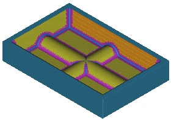

Estimated time to complete: 7–11 minutes
In this project, you will create a program to cut the part from a solid block of material, using flow cuts to finish the corners and fillets.

Launch the Use flow cut to finish a cavity activity.